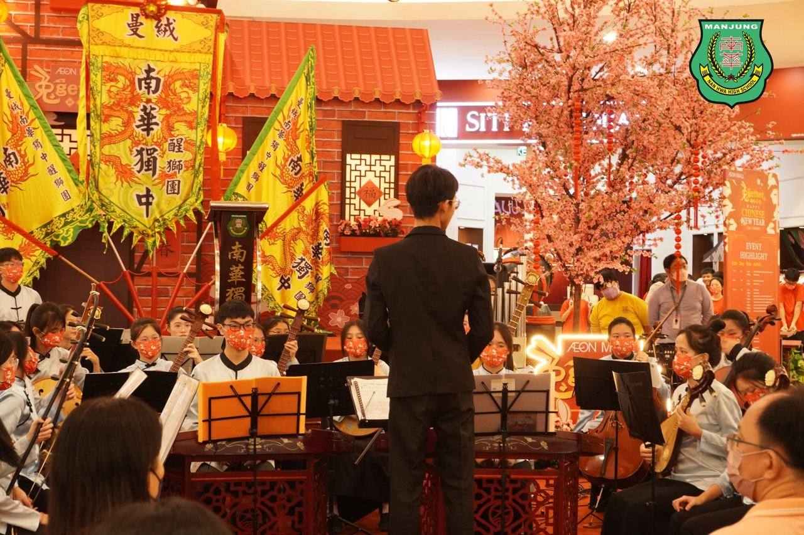
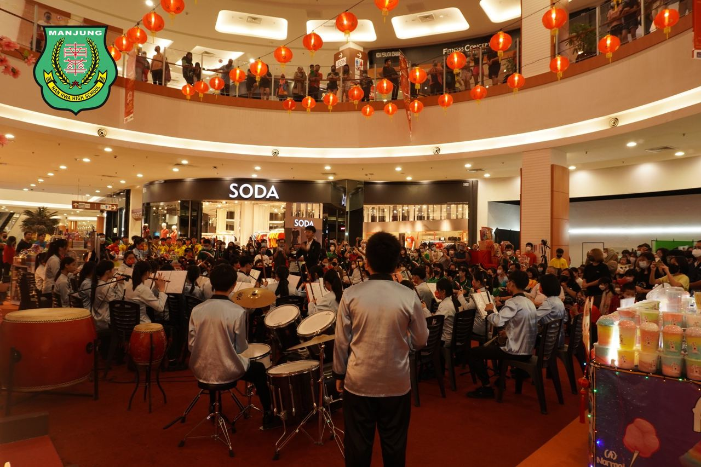
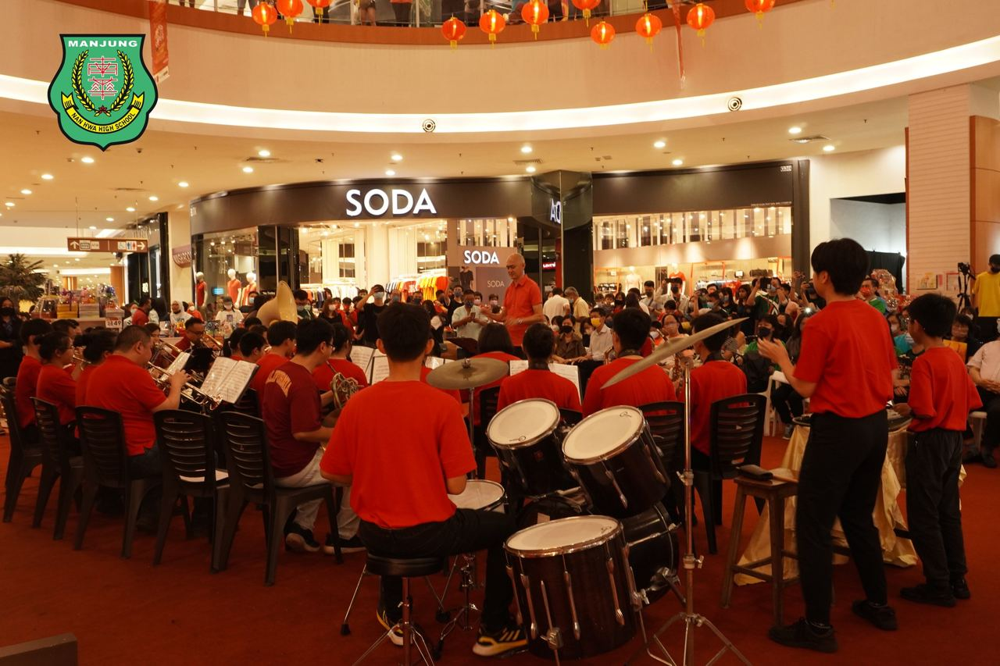
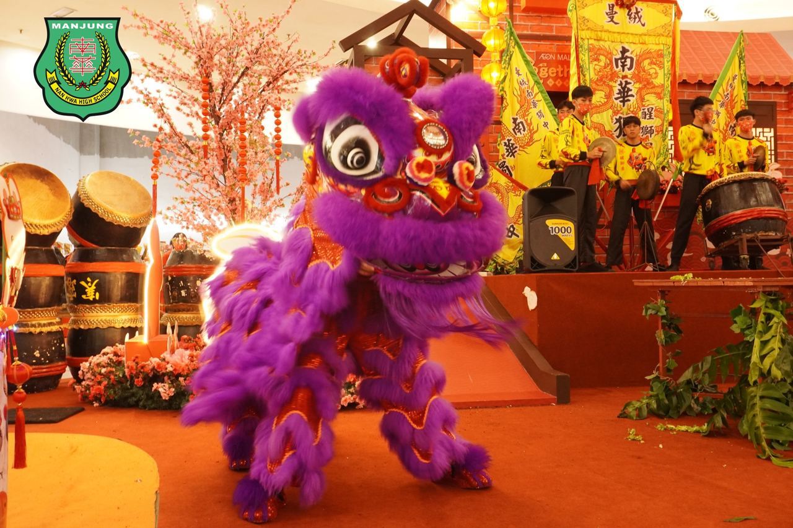
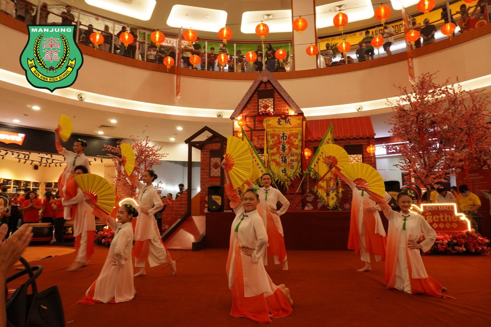
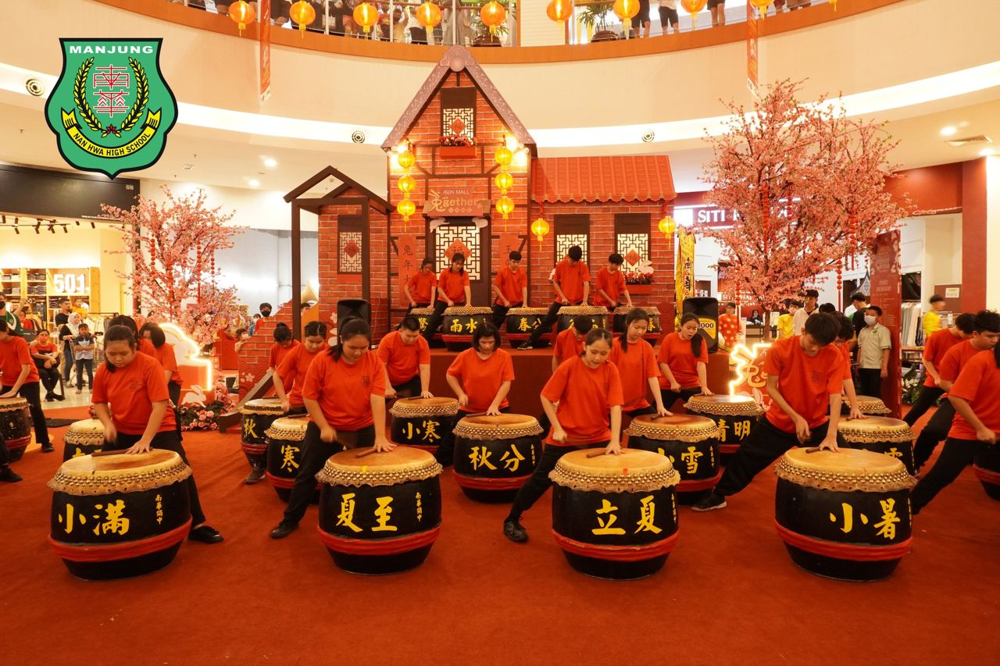
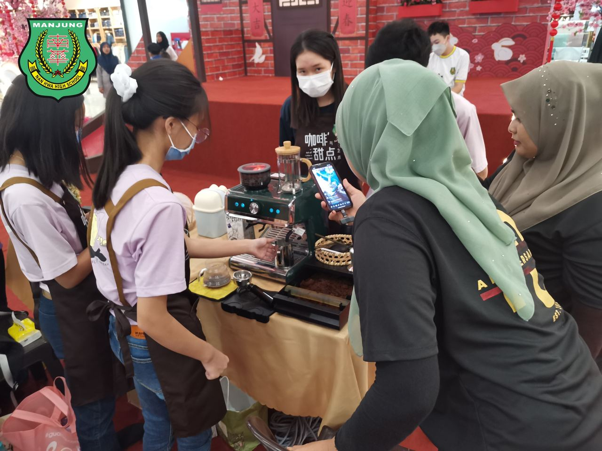

南华独中学习成果展 人潮涌动新年气息浓厚
南华独中学习成果展 人潮涌动新年气息浓厚
本校曼绒南华独中日前于AEON Mall中心广场举办一连三日的“南华独中学习成果展”终于圆满结束。学生除了以静态与互动成果展的方式向社区民众展示过去一年校本与选修课的学习成果，同时也安排了成果表演，包括华乐团、醒狮团、舞蹈团、管乐团与二十四节令鼓表演，引起群众纷纷驻足围观，现场人山人海、门庭若市。
“学习成果展”设有九大展区，即趣味科学实验展、咖啡与甜点艺术展、音乐展、木工手艺展、Robotic & A.I.展、艺术成果展、摄影艺术展、传媒艺术展与广告设计展。现场也派遣了教师职员为社会民众讲解南华独中的办学愿景、方针及特色等相关资讯。学习成果展于周六晚间7点迎来高潮，学校共有五大重点学会参与演出，即是华乐团、醒狮团、舞蹈团、管乐团与廿四节令鼓，表演主题皆与新春有关，现场弥漫着浓厚的新年气氛，同时也彰显出独中对于中华文化素质的重视与传承。
南华独中董事长颜登逸先生在学习成果表演开幕仪式致辞中表示，南华独中深知身处于21世纪的学生亟须具备懂得解决问题的能力，并且拥有强大的心理素质，因此校方非常重视素质教育。校外学习成果展的成功，正是印证除了该校“学会读书·学会做人”的办学理念，除了传统课堂学习，学生也交出了亮眼的联课活动成绩以及丰富多元的校本与选修课学习成果。
颜董事长强调，“校本与选修课就像一扇为学生而开的兴趣之门，让学生有机会接触到门后奇妙的世界。如果门后的世界并非学生的兴趣所在，至少他们曾经打开过这一扇门，见识过一眼这五花八门的世界，大大丰富了学生的人生阅历。”
南华独中校长陈丽冰博士表示，成果展现场的所有作品虽不美至精，却至真至善，因为每一个作品都有它的生命与灵魂，是师生们泪水汗水夹着的辛勤耕耘与努力付出的成果。学习不仅仅在教室，天空之下处处是教育，南华独中的学生们走出斗大的教室，向社会群众展示学习的成绩单。
#学习成果展 #成果表演 #校本课程 #选修课程
#华乐团 #醒狮团 #舞蹈团 #管乐团 #二十四节令鼓
#南华独中 #曼绒 #实兆远







